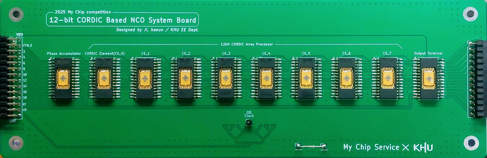
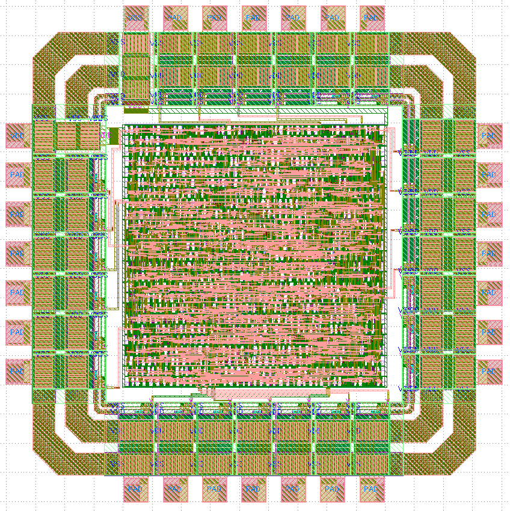
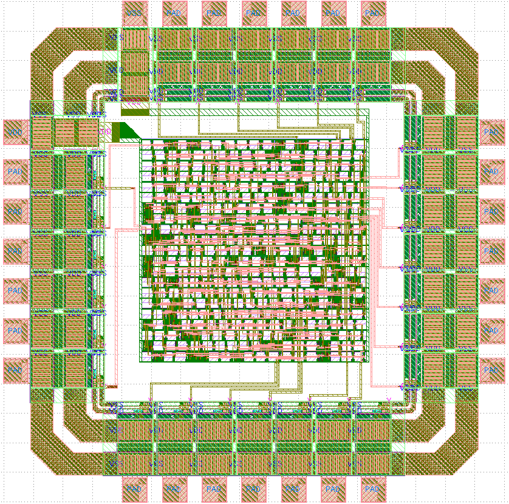

Chip Design Project #3: 12-bit CORDIC-based NCO (2025 1st Shuttle, My Chip Service)
 Sub1: Phase Accumulator
Sub1: Phase Accumulator
Open-Source EDA-based design, taped out via the My Chip Service 500nm Si CMOS.

12-bit CORDIC-based NCO System PCBSub1: Phase Accumulator
Sub2: CORDIC Element
Sub3: Output Terminal
Chip Design Project #2: 8-bit FIR Processing Element (2024 2nd Shuttle, My Chip Service)
 FIR Processing Element
FIR Processing Element
Open-Source EDA-based design, taped out via the My Chip Service 500nm Si CMOS.
FIR Processing Element
Chip Design Project #1: 4-bit Booth's Multiplier (2023 1st Shuttle, My Chip Service)
 Booth's Multiplier
Booth's Multiplier
Open-Source EDA-based design, taped out via the My Chip Service 500nm Si CMOS.
Booth's Multiplier